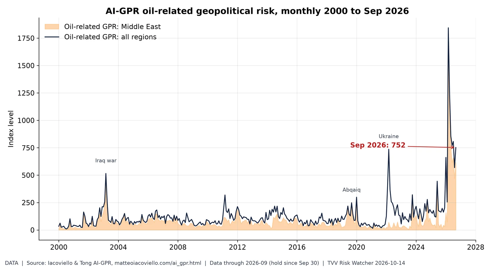
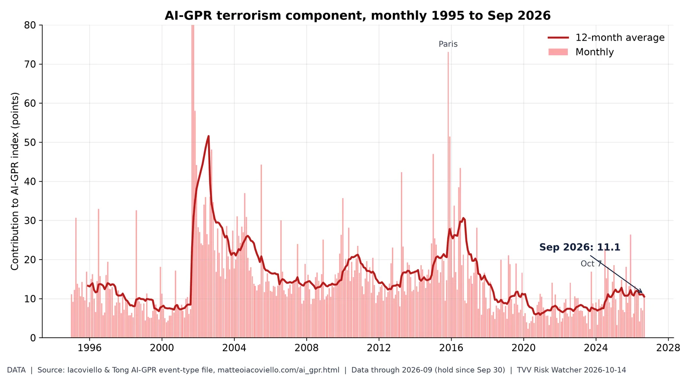
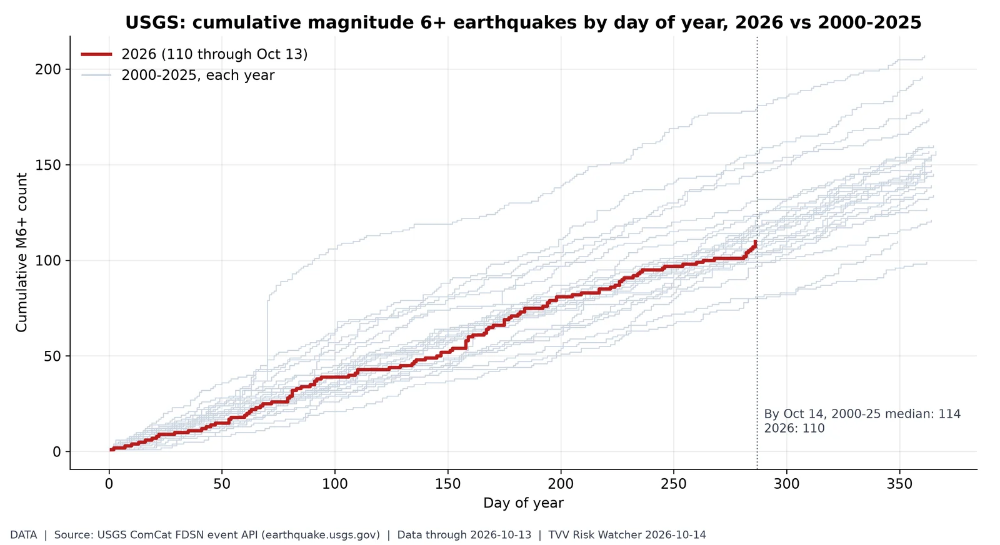
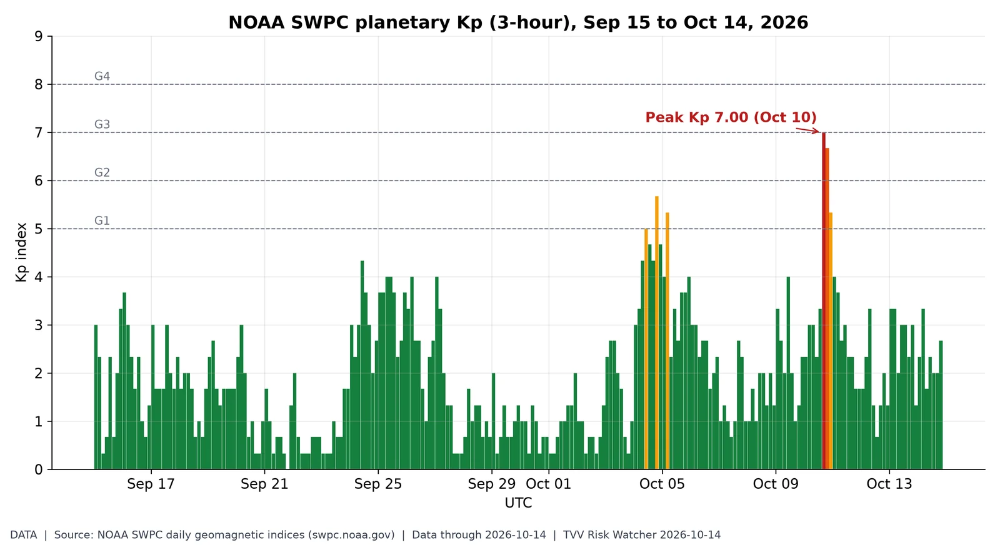
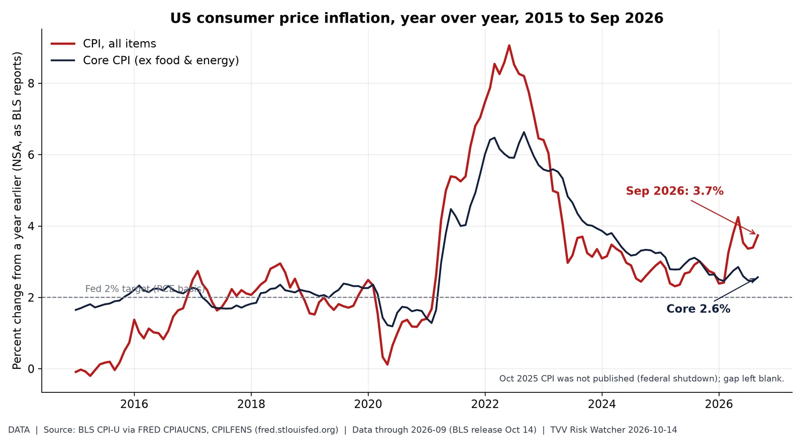
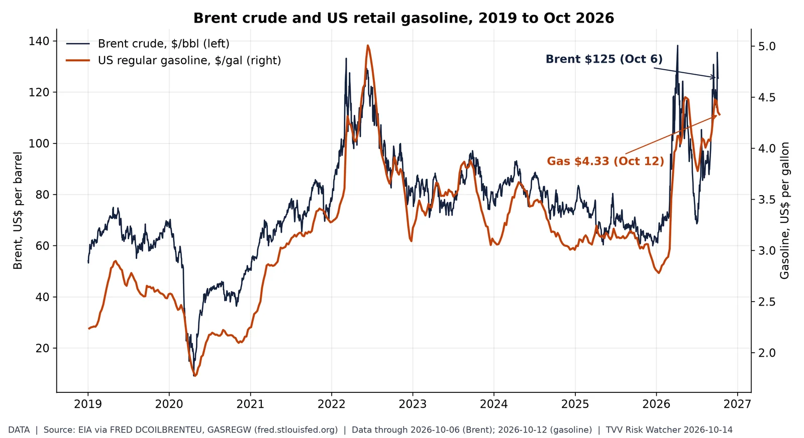

Daily Geopolitical Risk index. Daily GPR hit 342 on Oct 13, triple its long-run norm, as Hormuz attacks and Russia's missile barrage hit the news. Source: https://www.matteoiacoviello.com/gpr.htm

Oil geopolitical risk at record. Iacoviello's oil-related AI-GPR read 752 in September, far above the 2003 Iraq-war and 2022 Ukraine spikes. Source: https://www.matteoiacoviello.com/ai_gpr.html

Terrorism share of geopolitical risk. The terrorism component of AI-GPR rose to 11.1 in September from 7.0 in August, near its March 2026 high of 13.3. Source: https://www.matteoiacoviello.com/ai_gpr.html

M6+ earthquake pace. 2026 has 110 M6+ quakes by Oct 13 vs a 2000-25 median of 114: a normal pace, so the risk is where they strike, not how often. Source: https://earthquake.usgs.gov/fdsnws/event/1/

Geomagnetic activity, last 30 days. Kp peaked at 7.00 on Oct 10, a strong storm; Oct 14 has stayed below Kp 4 so far, in line with SWPC's Kp 3.67 outlook. Source: https://www.swpc.noaa.gov/products/planetary-k-index
Yield curve after inversion. The 10Y-2Y spread is back positive at +0.37 after the 2022-24 inversion, the un-inversion phase that preceded past recessions. Source: https://fred.stlouisfed.org/series/T10Y2Y

Energy-driven inflation re-acceleration. Headline CPI jumped to 3.7% in September while core sat at 2.6%: an energy-led shock pushing the Fed toward hikes. Source: https://fred.stlouisfed.org/series/CPIAUCNS

Oil shock at the pump. Brent is $125 after an April peak of $138, above 2022's high; US gasoline averages $4.33, driving September's CPI jump. Source: https://fred.stlouisfed.org/series/DCOILBRENTEU
Calm tape, hot risk. The S&P 500 sits near 7,805 with VIX at 15.3 while the GPR 30-day average stays elevated: a complacency gap. Source: https://fred.stlouisfed.org/series/SP500
Fed hike odds after CPI. Kalshi's Oct 28 hold slid from 82c to about 67c after the hot CPI, and a Dec 9 hike trades near 77c: tightening risk is back. Source: https://kalshi.com/markets/kxfeddecision
AI capability scaling. Training compute for notable models keeps compounding roughly 5.9x a year, the scaling engine behind SI-AGI risk. Source: https://epoch.ai/data/ai-models